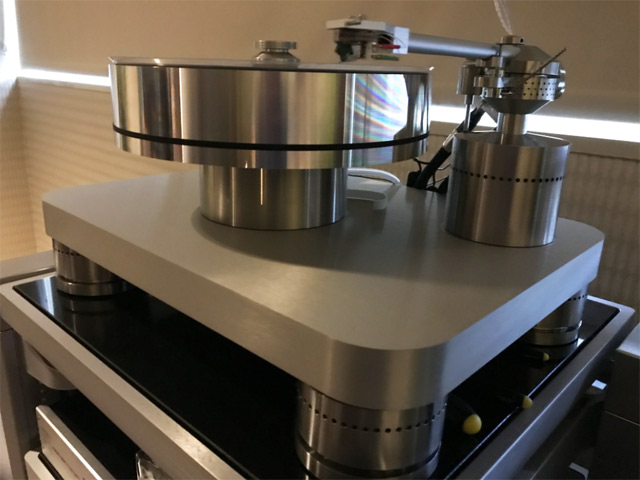

【HIFI说 2017年6月报道】美国加州地区最大的消费音响展会——2017年洛杉矶音响展（Los Angeles Audio Show）——刚刚于6月2日道4日在Sheraton Gateway酒店闭幕，包括麦景图、MBL、Emerald Physics、Ayon等品牌参展，下面HIFI说为您整理发布本届展会上最值得关注的音源/功放等电子器材精品。
“HighLine Amp1是一款每声道输出功率为120瓦，采全平衡设计，配备高分辨率TFT显示屏，让聆听更有趣……” 查看产品详情>>
“PST-100是一个漂亮的管前置放大器，装在一个厚厚的缎面铝制底盘上。它具有基于变压器的衰减，6CA4管整流，扼流电源滤波，可切换的被动模式……”查看产品详情>>
“采用胆石混合放大，仅两个增益级，没有负反馈，驱动世界上任何低灵敏度的音箱，均产生无比的乐感和透明度，高分析频率增益放大，并联式供电，A类放大，带宽10-75KHZ变压器是它的强项，对称输出放大原理，靓声机种……”查看产品详情>>
“采用了LCR电路实现RIAA等化的VPS-100，相对CR电路的设计，声音更自然细腻，音乐表现力更佳。LCR电路使用了两个增益阶段和两个T过滤器，第一个2123Hz空气电感应用于第一个增益阶段，另外一组50Hz-500Hz应用于第2个增益阶段，二阶放大使用了Siemens C3电子管，该管非常可靠，工作时间长达10,000小时……”查看产品详情>>
“百世Basis Audio Transcendence黑胶唱机是该品牌已故创始人AJ Conti遗留的大师级作品，其设计与30年前的该品牌同类产品已经进化许多，它大量采用了金属材质而非亚克力，声音效果也相当诱人……”查看产品详情>>

“百世Basis Audio “Berkeley的Alpha DAC Series 1是一台很成功的解码器，Alpha DAC Series 2是在一代的基础上改良而成，新升级包括采用了新的时钟，新的机内电路间隔离设计，让电路间干扰被彻底隔绝，通过这些优化的技术，让Alpha DAC Series 2相对旧版具有更精密的性能，让声音结像精准度上大为提升、析力也更好，声音更纯净和真实；全新的Alpha DAC Series 2在外观上与旧版基本一样，但在机后面板上可以看到分别，Alpha DAC Series 2因应数码音频的潮流，可以通过外接Berkeley USB接口方便连接数码设备解码播放……”查看产品详情>>
“PA3000 HV是一部充满独特崭新技术的HI-END扩大机。使用一流的组件和材料，在作工上也树立新的标准。PA3000 HV左右两声道是对称并且完全分离，这种双单声道的设计，独立电路确保了出色的声道分离，并防止互相串扰，提供宽广的动态范围与优异的线性技术，提供了音质上的巨大改善……”查看产品详情>>
“这款Ultra DAC支持MQA的Hierarchical Converter技术，它使用多个转换器提高解析力，同时可以减少噪声和量化误差（quantization error）。Ultra DAC配备双单声道DAC解码芯片、具有DSP (Digital Signal Processing)过滤、升采样(upsampling)和Apodising等技术……”查看产品详情>>